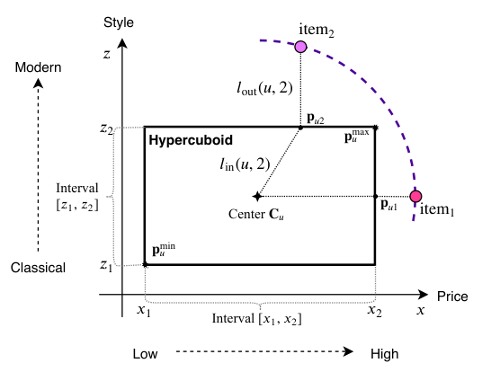
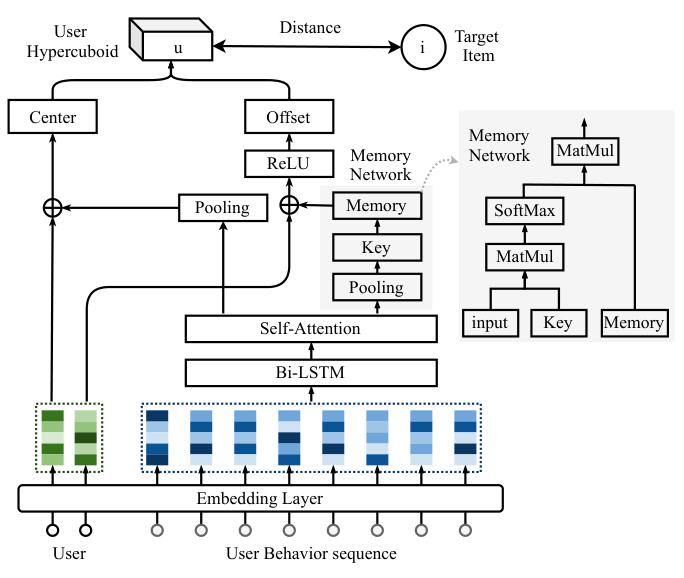

Learning User Representations with Hypercuboids for Recommender Systems (面向推荐系统的超长方体用户表示学习)
- 会议/期刊: WSDM 2021
- 作者与机构: Shuai Zhang、Ce Zhang (ETH Zurich)；Huoyu Liu、Yue Hu、Yumeng Li、Tanchao Zhu、Shaojian He、Wenwu Ou (阿里巴巴)；Aston Zhang (UIUC)
- 推荐链路定位: 召回（用户表示与 Top-K 检索）
- 研究方向: 协同过滤与双塔召回 / 序列与会话推荐
- 论文原文: https://arxiv.org/abs/2011.05742v1
- 开源代码: 暂未开源
TL;DR (1分钟核心速览)
现有 CF 把用户压成向量空间中的一个点，无法表达"价格可接受区间""风格容忍度"这类范围型偏好，且同一球面上距离相等的两个物品无法区分。本文提出将用户建模为超长方体（中心 \(\mathbf{C}_u\)与非负偏移\(\mathbf{F}_u\)），用「外部距离 + γ·内部距离 + 内外分界附加距离」的复合度量打分，并提供同心/独立多长方体两种变体。在 4 个公开集与 2 个阿里巴巴线上集上，按时间切分、全库排序评测，单长方体即超越 HGN/SASRec/Caser，Alibaba V1 的 Recall@50 相对最优基线提升 14.3%。
Background & Motivation (背景与核心矛盾)
- 主流范式: 以 BPRMF、TransRec 为代表的点嵌入模型把用户与物品都映射为 \(\mathbb{R}^d\) 中的单点，用内积或欧氏距离衡量偏好；序列侧则用 GRU4Rec/Caser/SASRec/HGN 从行为序列学出该点向量。
- 前人局限一（表达能力）: 把跨品类、跨域的多峰兴趣压缩进单点，信息必然被平均；而用户对"价格""风格"等因子的偏好天然是区间，单值嵌入无法表达。
- 前人局限二（几何不灵活）: 纯欧氏距离下，用户向量球面上任意两点等距，模型被迫认为用户对两者兴趣相同，无法体现"风格不匹配但价格合适"这类维度非对称的取舍。
- 核心洞察 (Key Insight): 一个超长方体内部包含无穷多物品点，可"包住"任意多正样本而不产生相互拉扯（缓解点嵌入的 congestive 问题）；其边长天然对应各维度的偏好容忍范围。
- 本文切入点: 保留物品为点、把用户升级为子空间，并重新设计「点到超长方体」的复合距离使内外物品可被严格分层排序。

Method (核心方法设计)
1. 整体框架 (Overall Architecture)
输入为用户最近 \(L\)条行为序列，经物品嵌入表得到序列矩阵后，先由 Bi-LSTM 建模双向转移，再经缩放点积自注意力加权、池化得到定长向量\(\mathbf{s}_u^{(t)}\)；该向量一方面经 MLP 生成长方体中心\(\mathbf{C}_u\)，另一方面作为 query 进入键值记忆网络检索"区间知识"，经 ReLU 保证非负后输出偏移\(\mathbf{F}_u\)；最后用复合距离对候选物品打分，并以成对 hinge 损失端到端训练，推理时对全库物品按该距离升序返回 Top-K。
flowchart TD
A["用户最近 L 条行为序列"] --> B["Bi-LSTM + Self-Attention + Pooling"]
B --> C["中心 C_u (MLP)"]
B --> D["键值记忆网络 + ReLU → 偏移 F_u"]
C --> E["点到超长方体复合距离 ℓ(u,i)"]
D --> E
F["候选物品点 V_i"] --> E
E --> G["Top-K 召回 / Hinge 排序损失"]
2. 关键设计拆解 (Key Designs)
- 超长方体表示与复合距离 (Hypercuboid & Compositional Distance)：点嵌入无法编码区间偏好。定义为 \(\text{Hypercuboid} \equiv \{\mathbf{p} \in \mathbb{R}^d: \mathbf{C}_u-\mathbf{F}_u \preceq \mathbf{p} \preceq \mathbf{C}_u+\mathbf{F}_u\}\)；先求物品在长方体表面上的最近点\(\mathbf{p}_{ui} = \min(\mathbf{p}_u^{\max}, \max(\mathbf{p}_u^{\min}, \mathbf{V}_i))\)（逐维截断），再组合\(\ell(u,i) = \underbrace{\lVert \mathbf{p}_{ui}-\mathbf{V}_i\rVert_2^2}_{\ell_{\text{out}}} + \gamma\underbrace{\lVert \mathbf{p}_{ui}-\mathbf{C}_u\rVert_2^2}_{\ell_{\text{in}}}\)。物品在体内时\(\ell_{\text{out}}=0\)，仅由内部距离区分；体外时外部距离主导。\(\gamma\) 越小则"入体即正例"，越大则体内仍需按离心距离排序——这一项正是打破"同心球等距"几何僵局的算子。
- 内外分层附加距离 (Additional Distance)：仅靠连续距离可能出现体内物品排到体外之后的错序。作者追加 \(\ell_{\text{add}}(u,i) = 2\big(\sigma(\alpha\lVert \mathbf{p}_{ui}-\mathbf{V}_i\rVert_2^2)-\tfrac{1}{2}\big)\lVert \mathbf{F}_u\rVert_2^2\)，\(\alpha>100\)：体内时该项≈0，体外时≈长方体最大对角线的量级，从而在度量层面硬性保证"体内优先于体外"。
- 两种多长方体变体与训练/推理：单长方体难以覆盖多峰兴趣。同心变体共享中心、叠加 \(M\)个偏移，\(\ell(u,i)=\sum_j \ell^j_{\text{out}}+\gamma\min_j \ell^j_{\text{in}}\)（外部求和=任一视角不匹配即惩罚，内部取最小=只要贴合某一兴趣即可）；独立变体则为\(\ell(u,i)=\min_j \ell^j(u,i)\)并对外部附加距离取最大，等价于"最近子空间命中即推荐"。训练采用成对 hinge 损失\(\mathcal{L}=\sum_{(u,i)\in\mathcal{T}^+}\sum_{(u,j)\in\mathcal{T}^-}\max(0, \ell(u,i)+\lambda-\ell(u,j))\)，\(\lambda=0.5\)，负采样沿用 HGN 策略（非均匀采样），全流程无 softmax、无需负采样近似即可全库打分，推理开销为\(O(|\mathcal{I}|d)\) 距计算 + 记忆网络一次前向。
Experimental Setup & Evaluation Protocol (实验设置与评估协议)
- 数据集与预处理: 亚马逊三集评分 \(\ge 4\)视为正反馈；统一丢弃交互数\(<10\)的用户与\(<5\) 的物品（即 user-10 / item-5 core 过滤）。
| 数据集 | #Users | #Items | #Interactions | 密度 | 说明 |
|---|---|---|---|---|---|
| Amazon-Books | 52,406 | 41,264 | 1,856,747 | 0.086% | 公开，图书 |
| Amazon-CDs | 17,052 | 35,118 | 475,265 | 0.079% | 公开，音乐 |
| Amazon-Movies&TVs | 23,337 | 33,582 | 694,970 | 0.089% | 公开，影视 |
| E-commerce | 104,929 | 69,563 | 5,560,954 | 0.076% | 公开，四周日志 |
| Alibaba V1 | 145,057 | 92,364 | 28,926,924 | 0.216% | 线上，用户 100–500 交互 |
| Alibaba V2 | 131,692 | 109,670 | 8,558,837 | 0.059% | 线上，用户 50–100 交互 |
- 数据划分与防穿越 (Splitting Strategy): 全局时间戳切分——按交互时序取前 70% 训练、次 10% 验证、后 20% 测试，任务为 next-item 预测；验证集参与推理阶段（同 HGN 设定），严格避免未来穿越。
- 排名评测协议 (Ranking Protocol): Full-Ranking（全库未交互物品排序），排除用户已交互项后取 Top-\(k\)，\(k\in\{5,10,20,30,50\}\)，指标为 Recall@k、NDCG@k、MAP@k（正文报告中低\(k\) 为主，公开集曲线见原文图 5）。
- 对比基线与超参设置: 非神经基线 BPRMF、TransRec；神经基线 YouTubeDNN、GRU4Rec、Caser、SASRec、HGN。统一 \(d=100\)，序列长度\(L=5\)、目标长度\(T=3\)，Adagrad（lr=0.05），batch=4096，\(\ell_2\in\{0.1,\dots,10^{-6}\}\)，\(\gamma\in\{0.1,\dots,0.9\}\)，记忆容量\(N\in\{10,\dots,50\}\)，平均池化为默认；每组实验重复 5 次取均值。
Key Experimental Results (实验关键数据)
1. 主实验对比 (Main Results)
| 数据集 | 方法 | Recall@10 | Recall@50 | NDCG@10 | MAP@10 |
|---|---|---|---|---|---|
| Alibaba V1 | BPRMF | 0.0156 | 0.0459 | 0.0665 | 0.0284 |
| TransRec | 0.0192 | 0.0608 | 0.0789 | 0.0300 | |
| YouTubeDNN | 0.0251 | 0.0776 | 0.1041 | 0.0487 | |
| GRU4Rec | 0.0196 | 0.0631 | 0.0808 | 0.0367 | |
| Caser | 0.0227 | 0.0683 | 0.0952 | 0.0451 | |
| SASRec | 0.0233 | 0.0692 | 0.0989 | 0.0466 | |
| HGN (2nd) | 0.0271 | 0.0774 | 0.1141 | 0.0558 | |
| Ours (1 cuboid) | 0.0299 | 0.0885 | 0.1255 | 0.0610 | |
| Improv.% vs 2nd | +10.3% | +14.3% | +10.0% | +9.3% | |
| Alibaba V2 | BPRMF | 0.0370 | 0.0997 | 0.0536 | 0.0223 |
| YouTubeDNN | 0.0622 | 0.1655 | 0.0881 | 0.0396 | |
| Caser | 0.0639 | 0.1664 | 0.0913 | 0.0415 | |
| SASRec | 0.0619 | 0.1568 | 0.0897 | 0.0413 | |
| HGN (2nd) | 0.0649 | 0.1626 | 0.0930 | 0.0425 | |
| Ours (1 cuboid) | 0.0667 | 0.1764 | 0.0947 | 0.0431 | |
| Improv.% vs 2nd | +2.8% | +6.0% | +1.8% | +1.4% |
2. 消融实验 (Ablation Study)
表 A 去除全部神经结构（仅保留平均池化 + 长方体距离），Measure@10：
| 数据集 | 指标 | Remove NNs | Δ vs 完整模型 | Δ vs 次优基线 |
|---|---|---|---|---|
| Books | Recall | 0.0558 | -6.84% | +16.25% |
| Books | NDCG | 0.0360 | -6.01% | +1.41% |
| Books | MAP | 0.0264 | -8.97% | +10.00% |
| E-commerce | Recall | 0.1384 | -0.75% | +4.86% |
| E-commerce | NDCG | 0.1277 | -1.00% | +10.10% |
| Alibaba V1 | Recall | 0.0281 | -6.02% | +3.54% |
| Alibaba V1 | MAP | 0.0563 | -7.70% | +0.90% |
| Alibaba V2 | Recall | 0.0644 | -3.45% | -0.77% |
| Alibaba V2 | MAP | 0.0414 | -3.94% | -2.59% |
表 B 长方体数量 \(M\) 的影响（Recall@10 / NDCG@10 / MAP@10）：
| \(M\) | E-commerce 同心 | E-commerce 独立 | Alibaba V2 同心 | Alibaba V2 独立 |
|---|---|---|---|---|
| 2 | 0.1396 / 0.1300 / 0.0802 | 0.1476 / 0.1336 / 0.0830 | 0.0722 / 0.1032 / 0.0480 | 0.0766 / 0.1119 / 0.0534 |
| 4 | 0.1529 / 0.1415 / 0.0885 | 0.1525 / 0.1374 / 0.0859 | 0.0760 / 0.1095 / 0.0519 | 0.0779 / 0.1136 / 0.0544 |
| 6 | 0.1436 / 0.1334 / 0.0827 | 0.1530 / 0.1381 / 0.0866 | 0.0763 / 0.1100 / 0.0522 | 0.0785 / 0.1148 / 0.0552 |
3. 关键实验发现 (Key Findings)
- 收益主要来自"距离函数"而非"序列编码器"：表 A 中把 Bi-LSTM + 自注意力全部换成平均池化，E-commerce 的 Recall@10 仅下降 0.75%，却仍比次优基线高 4.86%、NDCG 高 10.10%；Books 上更是比次优基线 Recall 高 16.25%——说明长方体几何本身的表达力贡献了绝大部分增益，神经序列模块属于"锦上添花"。
- 多长方体显著优于单长方体，且独立变体更稳：Alibaba V2 从 \(M=2\)到\(M=4\)，独立变体 NDCG@10 由 0.1119 升至 0.1136（较表 2 单长方体 0.0947 提升约 20%），说明单点/单体假设严重低估了用户兴趣多样性；但\(M\)增至 8/10 反而退化，\(M\in[4,6]\)是稳定甜点，同心变体在 E-commerce 上\(M=6\) 出现明显回落（0.1529→0.1436），参数共享带来的视角同质化是主因。
- 线上稀疏人群增益更可观，稠密人群更依赖序列：Alibaba V1（用户 100–500 交互）相对 HGN 的 Recall@50 提升 14.3%，而 V2（50–100 交互）仅 6.0%；但 V2 上"去神经"版本反而低于次优基线 0.77%，说明交互越稀疏、行为序列提供的信息边际价值越高，两类模块存在互补而非替代关系。
Highlights & Limitations (亮点、对比与审稿批判)
- 与代表作对比 (vs. Prior Work): 相比 BPRMF/TransRec 的"点-点内积/欧氏"，本文用"点到子空间"把几何自由度从 \(d\)提升到\(2d\)（中心 + 非负偏移）；相比 SASRec/HGN 仅在编码器侧堆叠注意力与门控，本文改造的是打分几何本身，因此可与任意序列编码器正交组合（表 A 已验证）；与 KG 中的 box embedding（Query2Box 系）思路同源，但首次迁移到用户兴趣建模并给出"体内优先"的附加距离约束。
- 可迁移亮点: (1) \(\ell_{\text{add}}\)这种"用\(\sigma(\alpha\cdot)\) 近似 0/1 指示、再乘尺度因子"的软硬序约束，可直接用于任何需要"子空间内样本严格优先"的检索任务（如地理围栏 POI、价格带电商）；(2) 用键值记忆网络专门承载"偏移（区间知识）"、MLP 承载"中心"，把"偏好均值"与"偏好宽度"解耦学习，对长尾商品的价格带估计尤其有用。
- 审稿级局限批判: 其一，公开数据集（Books/CDs/Movies/E-commerce）的主结果仅以折线图（原文图 5）呈现，未给数值表，横向复现与显著性检验（未报 \(p\)值、未报置信区间）难以核对；其二，打分需对全库做逐维截断 + 平方距离，偏移维数翻倍，线上召回需依赖近似最近邻结构（文中未讨论量化/ANN 适配与延迟），且\(\gamma\)、\(\alpha\)、\(M\)、记忆容量\(N\) 四个超参耦合，调参成本较高。
Rating (四维评分)
- 方法创新性 (Novelty): ⭐⭐⭐⭐ （把用户从点升级为超长方体并重新定义内外复合距离，几何视角清晰、公式极简，但 box embedding 思想在 KG 领域已有先例，迁移创新大于原理创新）
- 评估协议与实验扎实度 (Protocol & Experiments): ⭐⭐⭐⭐ （6 数据集含 2 个线上集、全库排序、时间切分规范、7 个强基线且重复 5 次取均值；扣分在于公开集结果只给曲线、缺显著性检验与方差报告）
- 写作与数学规范度 (Clarity & Rigor): ⭐⭐⭐⭐ （复合距离与两种变体的定义紧凑直观，\(\gamma=0\)的退化分析有说服力；但\(\ell_{\text{add}}\)的\(\alpha\) 取值与"≈半对角线"的推导仅为定性论证，未给误差界）
- 工业落地与复现价值 (Industrial & Practical Value): ⭐⭐⭐⭐ （已在阿里巴巴线上数据验证，打分器可与任意编码器解耦、参数增量远小于加宽 embedding；但无开源代码，且偏移带来的全库检索延迟未量化，落地需自建 ANN 方案）